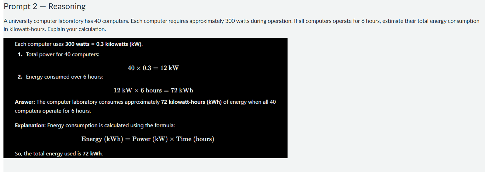
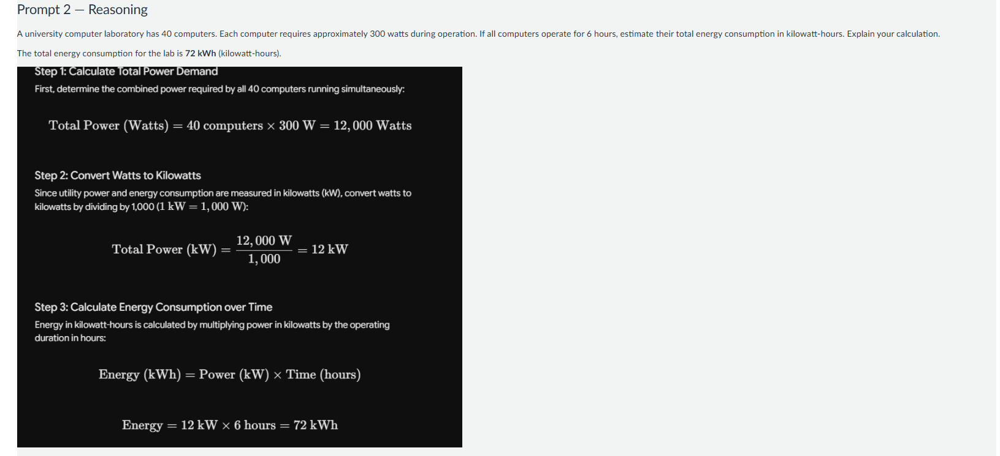
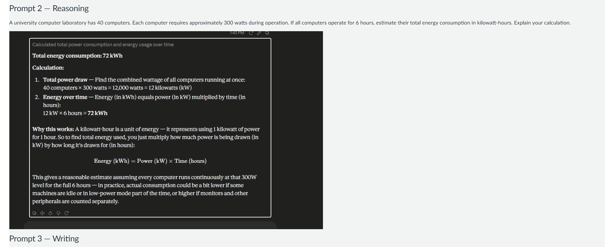
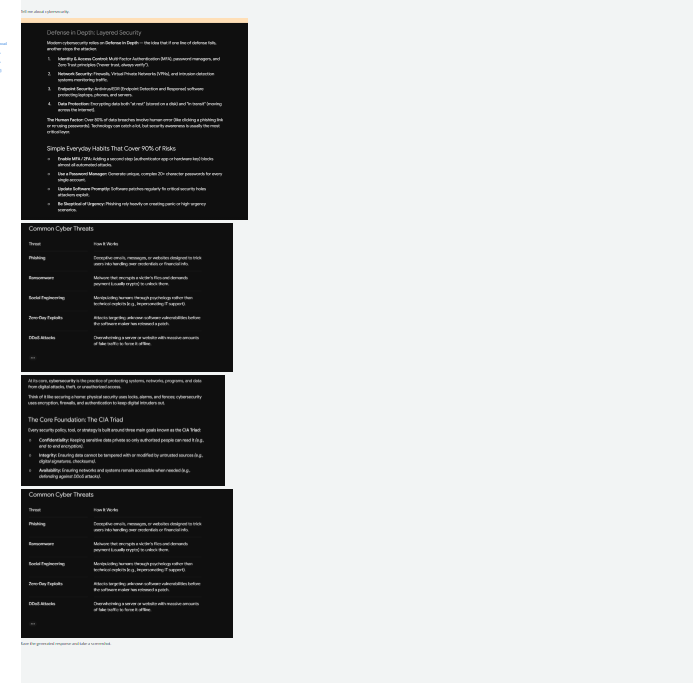
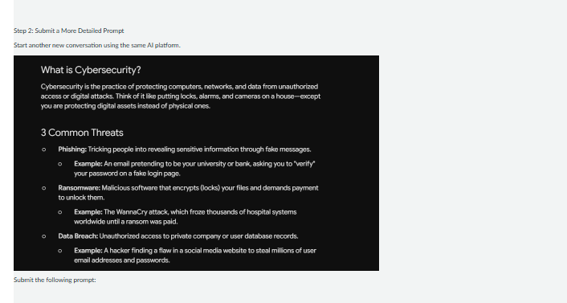

Part A · Platform exploration
I spent time on each platform and recorded what I could actually test.
| Feature | ChatGPT | Google Gemini | Claude |
|---|---|---|---|
| Developer | OpenAI | Anthropic | |
| Account required? | Yes, for full features | Google account | Yes, for the chat interface (also available through the API) |
| General questions | Yes | Yes | Yes |
| Analyzes uploaded files | Yes | Yes PDFs, docs, code, CSVs | Yes documents, spreadsheets, PDFs, code |
| Analyzes images | Yes | Yes multimodal | Yes |
| Current / web information | Yes, when web access is on | Yes, grounded in Google Search | Yes, when web search is on |
| Keeps conversation context | Yes | Yes, multi-turn history | Yes, in a chat, and across chats with memory on |
| Notable feature | Coding, writing, data analysis, image generation, custom GPTs | Very large context window; native text, audio, image and video input; runs code to check math | Creates files and artifacts (docs, sheets, slides, code), runs code, connects to tools through MCP |
Part B · Same prompt, different AI
I sent four identical prompts to all three platforms, each in a new conversation.
Prompt 1 · KnowledgeExplain how cloud computing works to a first-year college student. Limit your answer to 150 words.
All three explained it well, in different styles. ChatGPT gave a compact, plain definition. Gemini named real providers (AWS, Azure, Google Cloud) and introduced virtualization. Claude used an electricity-grid analogy and everyday examples like Netflix and Google Drive.
Prompt 2 · ReasoningA university computer laboratory has 40 computers. Each computer requires approximately 300 watts during operation. If all computers operate for 6 hours, estimate their total energy consumption in kilowatt-hours. Explain your calculation.
All three reached the correct answer, 72 kWh (40 × 0.3 kW = 12 kW; 12 kW × 6 h = 72 kWh). Claude also noted that real usage could be lower if machines idle, or higher if monitors are counted.



Prompt 3 · WritingWrite a professional email informing students that their laboratory class tomorrow will be moved online because of scheduled maintenance.
ChatGPT wrote a short, polite email. Gemini and Claude added structured details (date, time, platform, link) as placeholders. Claude was the only one to include a subject line.
Prompt 4 · Instruction followingExplain artificial intelligence using exactly three bullet points. Each bullet must contain no more than 15 words.
All three followed the constraint: exactly three bullets, each under 15 words. Claude labeled its bullets “What it is”, “How it works” and “Where it's used”.
Evaluation
| Criterion | ChatGPT | Gemini | Claude |
|---|---|---|---|
| Accuracy | 4 | 4 | 4 |
| Relevance | 4 | 5 | 4 |
| Clarity | 4 | 4 | 4 |
| Instruction following | 5 | 5 | 5 |
| Completeness | 4 | 5 | 4 |
| Total / 25 | 21 | 23 | 21 |
Result: Gemini scored highest overall. Its answers were the most complete, for example the step-by-step energy calculation and the most detailed email. All three were equally accurate and followed every instruction, so the differences came from style and completeness rather than correctness.
Part C · Basic vs. detailed prompt
Same platform, two new conversations:
Basic promptTell me about cybersecurity.
Detailed promptYou are explaining cybersecurity to first-year IT students with no professional cybersecurity experience. In 200 words or fewer, explain what cybersecurity is, give three common cybersecurity threats, and provide one real-world example for each. Use simple language and organize the answer using headings and bullet points.


| Aspect | Basic prompt | Detailed prompt |
|---|---|---|
| Level of detail | Overwhelming and very general | Just enough for the intended student level |
| Organization | Organized, but still overwhelming | Short and organized under headings |
| Audience fit | General, so it's a lot for a beginner | Pitched at first-year students |
| Examples | Lists many threats, few concrete real-world cases | One real-world example per threat: a fake university email, WannaCry, a social media data breach |
| Overall usefulness | 4 / 5 | 5 / 5 |
What changed
The basic answer was overwhelming and generalized. The detailed prompt gave only what its audience needed. Naming the audience and setting limits had the biggest effect: the AI dropped advanced material and kept the examples simple. The word limit and formatting rules made it short and scannable while keeping the essential information.
Part D · Reflection
Are all conversational AI systems essentially the same?
No. In Part B, all three got the same correct 72 kWh answer, but they differed in how complete and organized their answers were. Gemini scored highest because it gave the most complete answers, while ChatGPT was the most concise.
What made the biggest difference, though, was the prompt. When I told the AI who the answer was for, it gave the information that audience actually needed. It organized the answer so I wouldn't get lost, followed the instructions and limits, and kept it short.
The free features are fine for normal use, like asking questions or getting basic facts for a class. For deeper or more personalized work on complex assignments, you need to guide it. Specific instructions help it adapt to how you learn instead of giving generic answers every time. Without a good prompt, it treats every question like a blank slate, which isn't very helpful for college work. Tailoring prompts makes a huge difference between basic text and accurate, useful output.